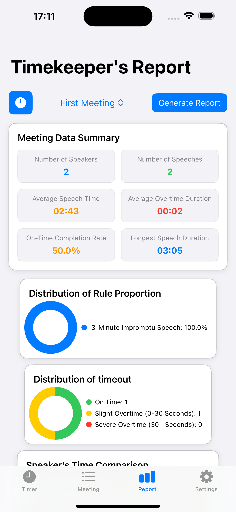
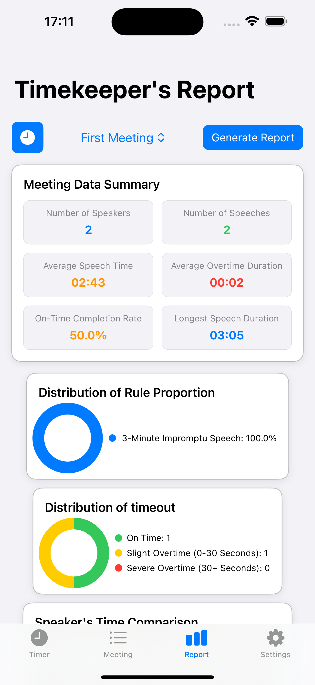

Time Reporter – Support Page
Official support for the Time Reporter app
Official support for the Time Reporter app
Time Reporter is a meeting timer and reporting assistant designed specifically for Toastmasters clubs.
Follow these steps to get started with Time Reporter:
 

Q1: Do I need an internet connection to use the app?
A: No. All timing and data storage functions work offline.
Q2: How can I export reports?
A: Go to the Reports tab → Select a meeting → Tap “Generate Report” → Save as PDF or image → Share via email, chat apps, or other tools.
Q3: How is my data protected?
A: Speaker names are stored locally with anonymization, meeting data is encrypted, and you may delete all data within the app at any time.
Q4: Which devices are supported?
A: Time Reporter supports both iPhone and iPad, running iOS 15 or later.
If you have questions, feedback, or suggestions, please contact the developer:
Current Version: v1.0